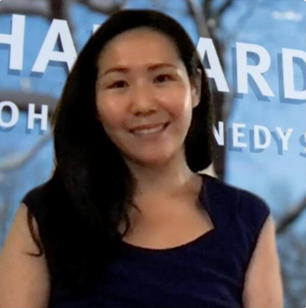

We are Harvard Kennedy School students that are willing to promote gender equality. We decided to use our new programming and data skills to make the data on this topic more accessible, to raise awareness of the gaps.
Juli is pursuing an MPA at Harvard Kennedy School of Government and holds an MBA from Stanford Graduate School of Business. She was born and raised in South Korea - a country where women have some of the highest labor force participation and educational attainment in the world, but also face some of the worst gender inequality in the world. Prior to graduate school, she worked in economic development in Sub-Saharan Africa at TechnoServe, an international NGO. After graduate school, she will be joining BCG’s New York office. She enjoys baking, photography, and craft beer.
Dana is an MPA Candidate at Harvard Kennedy School of Government and holds an MBA from MIT Sloan. She was born and grew up in Mexico City, in a context where career and life expectations were strongly influenced by traditional gender roles. She has worked as a Senior Product Manager at Amazon Web Services; as Director of Strategy and Innovation at “TEACH-NOW”, an edtech startup with proprietary education software, leading product management and their technological innovation portfolio. She was also Global Program Manager of the empathy initiative at Ashoka. She enjoys hiking, travel and live music.

Kelly is an MPA Candidate at Harvard Kennedy School of Government. She is a mission-driven professional committed to addressing global challenges through strategic solutions and innovation. She was Chair of the Human Welfare and Community Action Commission in the City of Berkeley and a member of the Chancellor's Staff Advisory Committee at the University of California, Berkeley, where she also completed her bachelor’s degree.
Yael is an MPA Candidate at Harvard Kennedy School of Government. Prior to HKS, she worked as an Economist at the budget department in Israel's Ministry of Finance, where she was in charge of the public transportation sector; Project manager in Professor Dan Ariely, (a world Behavioral Economics expert) consulting firm, where she directed the education and welfare sections; Correspondent and news anchor on Israel's most popular television channel and radio station. Yael holds a Master's in Research Economics, and received an “Excellence Award” for her thesis about women in the workforce, and specifically in tech.